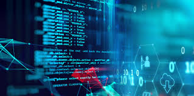
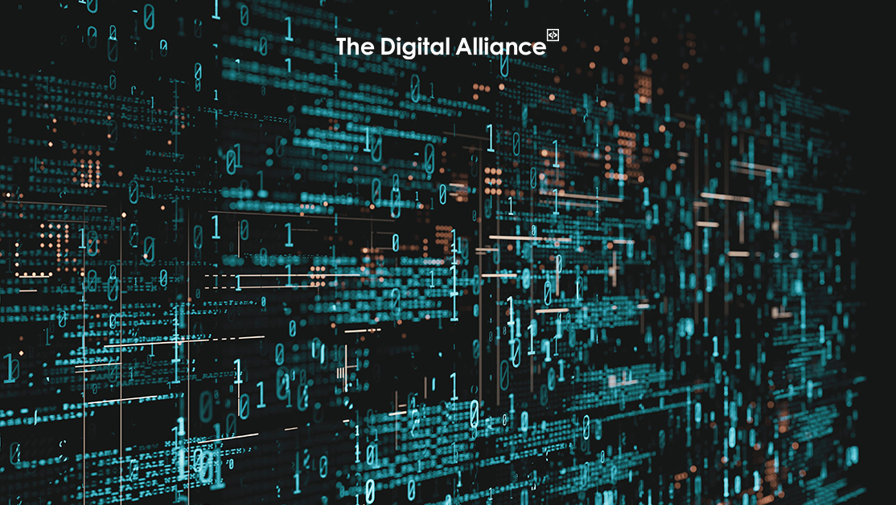

capitolo 2
componenti del Computer
Indice
link interni
Hardware
software
Hardware

La parola hardware deriva dall’inglese (“hard” significa pesante e “ware” significa oggetto) e significa letteralmente “ferramenta”.
L’hardware è la parte fisica del computer, reazione a catena dei componenti come:
Rom
Ram
Schede
Scheda madre
Processore (CUP)
Discofisso
le schede
Una scheda di espansione è un circuito stampato che può essere inserito nella scheda madre di un computer per aggiungere funzionalità.
Possono essere utilizzati per scopi diversi, come migliorare le prestazioni grafiche, migliorare la connettività di rete o migliorare la qualità audio.
Ecco alcuni esempi
Una scheda video (GPU): aggiunge potenza al processore del computer viene utilizzato per giochi, editing di video o altre attività grafiche pesanti.
Scheda audio: questo componente migliora la qualità della riproduzione audio, soprattutto in ambienti professionali o per persone con requisiti audio più esigenti.
La scheda di rete: aggiunge la possibilità di connettersi a Internet o ad una rete locale (Wi-Fi o Ethernet).
Scheda di acquisizione video: utilizzata per catturare video da altre fonti. tipo videocamere o console di gioco.
1. La scheda madre
è uno dei componenti più importanti del computer che si connette e consente ad altri dispositivi hardware di comunicare tra loro.
La scheda madre contiene CPU, RAM e slot per schede aggiuntive.
La scheda dispone inoltre di porte di connessione (USB, HDMI, ecc.) e supporta vari tipi di memoria di massa (SSD, HDD, ecc.).
scheda madre ha alcune caratteristiche molto importanti.
È normale cLahe la scheda madre di un computer disponga di un socket per il processore.
Il chipset controlla la velocità di comunicazione tra la RAM e le periferiche di input/output.
Le schede madri supportano diverse dimensioni e tipi (velocità) di moduli di memoria (RAM).
Le porte I/O sono i luoghi in cui colleghi tutte le periferiche e gli altri accessori. Ciò include i sistemi USB, HDMI, Ethernet audio ecc. A seconda del tipo di scheda madre che hai scelto, è progettata per supportare il sistema di raffreddamento passivo o attivo in base alle tue esigenze.
3. Le periferiche
sono i dispositivi esterni al computer attraverso i quali è possibile interagire con il computer, sia per
Input (Mouse)
output (Monitor)
Input-output (Chiavetta (USP) )
I dispositivi di input sono dispositivi, ecc., che inviano dati al computer.
Alcuni esempi includono
Dispositivo di input: aiuta a registrare le informazioni all'interno del sistema.
Il mouse viene utilizzato per regolare il cursore sullo schermo.
Convertire documenti cartacei in formato elettronico.
Un microfono è un dispositivo utilizzato per inserire l'audio, ad esempio per le videochiamate o le registrazioni audio.
La fotocamera viene utilizzata per scattare foto e video caricati sul computer.
3. Dispositivi di output
Il dispositivo di output fornisce all'utente una visualizzazione dei risultati elaborati dal computer.
Alcuni esempi includono.
Monitor: mostra grafica e testo dal computer.
Stampante: Chi stampa documenti su carta.
Gli altoparlanti riproducono l'audio, ad esempio potresti ascoltare musica, guardare un film o giocare.
Un proiettore è un dispositivo che proietta le immagini del computer su uno schermo di proiezione più grande.
I dispositivi che eseguono entrambe le funzioni sono chiamati dispositivi di input/output.
Alcuni esempi lo sono
Il touchscreen indica l'input (toccare per selezionare) e l'output (visualizzare il contenuto).
Un modem ti connette a Internet.
Il computer o il telefono utilizza un modem per trasmettere i dati a Internet.
Una scheda audio è in grado di ricevere l'audio attraverso il microfono oltre a riprodurlo.
Per riassumere, queste parti hardware sono necessarie affinché il computer funzioni correttamente.
La scheda madre è la parte principale del sistema, le schede di espansione consentono di aggiungere funzionalità specializzate e le periferiche controllano l'interazione tra utente e macchina in modo che l'utente possa fornire input e ricevere output dalla macchina.
softwafe

Il software è la parte intelligente del computer, la parte logica che fa funzionare il computer.
Per software si intende la serie di istruzioni o programmi che indicano a un computer cosa fare.
È indipendente dall'hardware e rende programmabili i computer. Esistono fondamentalmente tre tipi di software:
Software di sistema: fornisce le funzioni principali come sistemi operativi, gestione del disco, utility, gestione dell'hardware e altre necessità operative.
Software di programmazione: fornisce ai programmatori strumenti come editor di testo, compilatori, linker, debugger e altri strumenti per la creazione di codice.
Software applicativo (applicazioni o app): consente agli utenti di eseguire attività. Ne sono esempi le suite di produttività per ufficio, i software di gestione dei dati, i lettori multimediali e i programmi di sicurezza. Il termine applicazioni si riferisce anche alle applicazioni per il web e per i dispositivi mobili, come quelle che si usano per fare acquisti su Amazon.com, socializzare con Facebook o pubblicare foto su Instagram.